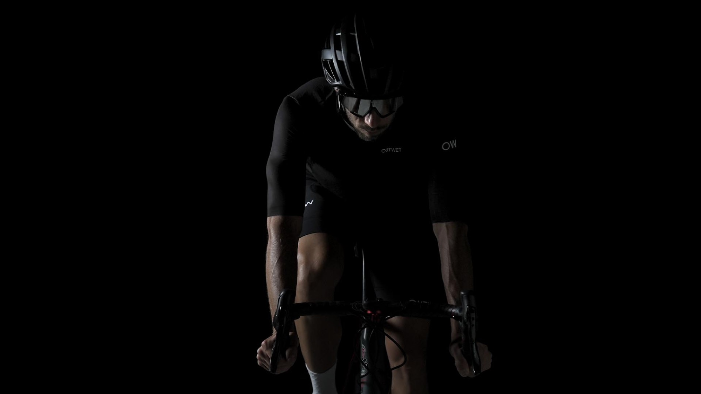
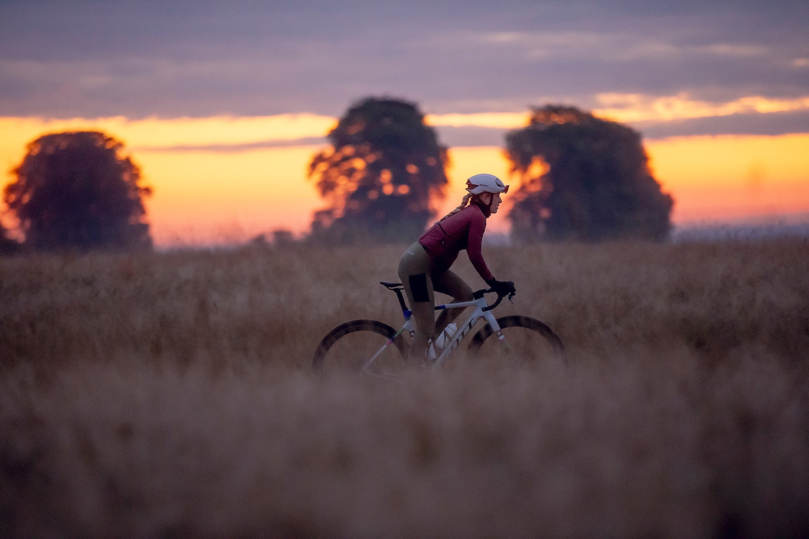
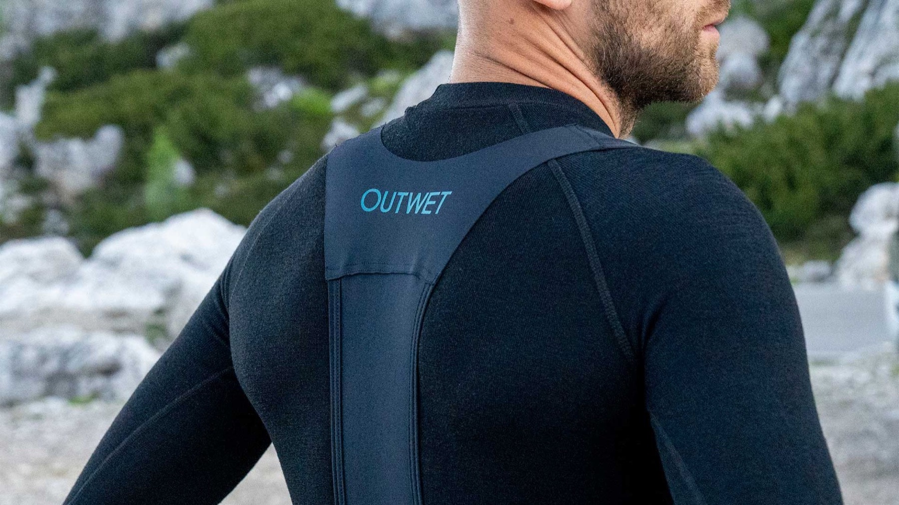
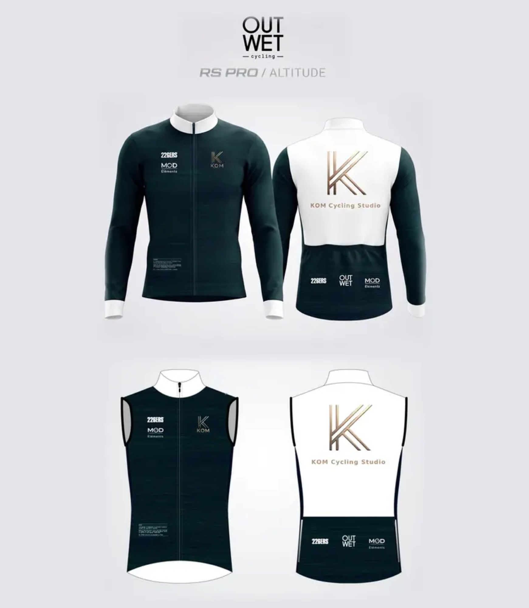

Équipement
Du textile technique pour toutes les conditions, et des tenues personnalisées à vos couleurs.

Danemark · Textile technique et accessoires
La marque danoise de textile technique et d'accessoires pour le cyclisme : gants, couvre-chaussures, vestes et sous-vêtements pour rouler par tous les temps.
Le tarif « Studio »

Italie · Textile personnalisable
La marque italienne spécialiste du « custom ». Vous êtes un groupe d'amis, un club ou une association à la recherche de tenues haut de gamme à un tarif accessible ? Contactez-nous et profitez des tarifs du Studio.
Fait par OUTWET

Le maillot manches longues et le gilet aux couleurs du KOM Cycling Studio.